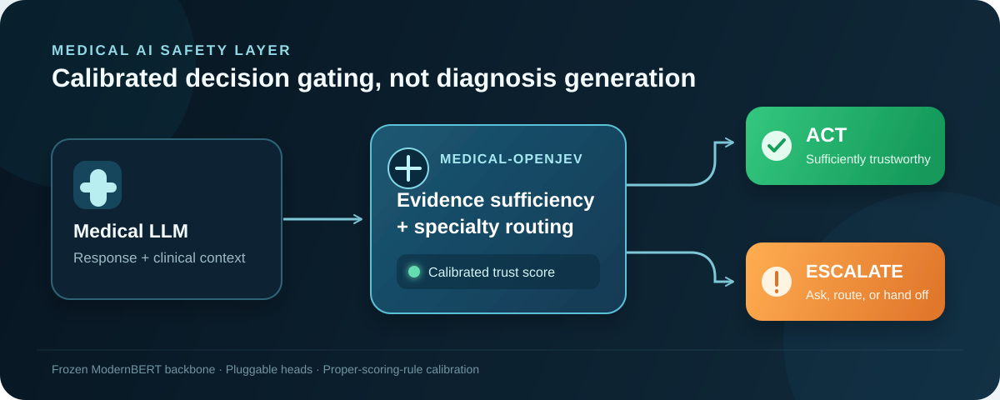

medical-openjev
An open-source, locally deployable, rigorously calibrated medical decision-gating model.
1Shandong University 2City University of Hong Kong (Dongguan) 3Tsinghua University 4Qingdao Endocrine and Diabetes Hospital
METHOD
Decision gating, not answer generation.
medical-openjev does not generate diagnostic answers. It determines whether an upstream medical LLM's current answer is trustworthy enough to act, or should be escalated for deeper inquiry or human review.

Model
A frozen ModernBERT backbone with lightweight, pluggable heads for evidence sufficiency and specialty routing.
Objective
Reinforcement learning with a strict proper scoring rule directly optimizes calibration.
Output
A calibrated confidence score plus an operational act or escalate decision for an upstream medical LLM.
RESULTS
Calibration on the dermatology (derm) evaluation.
Current experiments use Qwen3.5-4B. Conventional LLM self-assessment was severely overconfident: confidence was 0.74 despite an actual accuracy of only 0.28. medical-openjev achieved an ECE of 0.226—about 58% lower than the Base LLM—and reached 0.667 accuracy in its top-confidence 10%, or 2× the Base LLM.
| Metric | medical-openjev | Base LLM | Random | Outcome |
|---|---|---|---|---|
| ECE ↓ | 0.226 | 0.533 | 0.331 | 58% lower than Base LLM |
| Brier score ↓ | 0.241 | 0.523 | 0.345 | Approximately halved relative to the Base LLM |
| AURC ↓ | 0.597 | 0.666 | 0.746 | Best among the three methods |
| CovAcc@95% ↑ | 0.281 | 0.246 | 0.263 | Best overall |
| Cov@95prec ↑ | 0.067 | 0.000 | 0.000 | Achieved only by medical-openjev |
| Accuracy of top-confidence 10% ↑ | 0.667 | 0.333 | 0.167 | 2× Base LLM |
↓ lower is better · ↑ higher is better
APPLICATIONS
Capabilities for medical LLM workflows.
- Calibrated confidence scoringAttach a calibrated confidence score and actionable decision to any medical LLM answer.
- Intelligent triagePerform specialty routing for intelligent triage.
- Evidence-gap promptsIdentify evidence gaps in real time during a consultation.
- High-risk output interceptionDetect and intercept outputs that are wrong yet highly confident.
SAFETY NOTICE
Research use only.
medical-openjev is not a clinical device.
TEAM
Project team and affiliations.
| Person | Role | Affiliation |
|---|---|---|
| Tian Gan | Supervision & Project Lead | Shandong University |
| Ruifan Zuo | Student Project Leadership | Shandong University |
| Guocheng Hu | Student Project Leadership | Shandong University |
| Ziyang Meng | Team Member | City University of Hong Kong (Dongguan) |
| Dai Zichao | — | Shandong University |
| Zhao Qichao | — | Tsinghua University |
| Rui Wang | Medical Support | Qingdao Endocrine and Diabetes Hospital |
| San Zhang | Medical Support | Not specified |
OPENNESS
Open weights and evaluation, fully auditable.
Model weights and evaluation materials are openly available for transparent, auditable review.